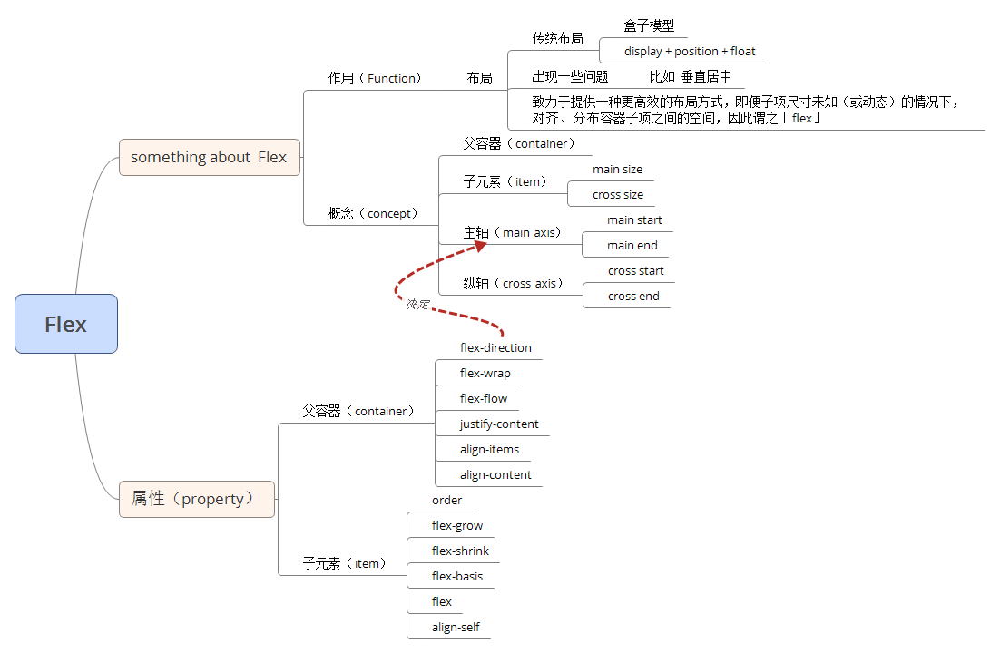

自己去年底开始接触Flex，仅仅还是做到搬运者的身份，自己在团队内部分享过一次，今晚又给学弟学妹们小结了一下关于Flex的知识点，受益良多。
思维导图
首先，自己整理了一个关于Flex学习的思维导图，其中有些概念需要配合第二张图观看

概念图：

介绍
看过了很多人关于Flex的博客，其实介绍蛮详细有关Flex的知识点，都是文图说明且文字居多，确实会有看不下去的时候，所以我会为每一个属性的一个jsbin的代码片段，读者可以结合观看：
container （容器） 属性
在所有的父容器属性成效的前提是：
设置好了这个属性过后，子元素的float、clear、vertical-align属性都会失效，因为Flex有相对应的设置。
1. flex-direction 👈结合文字说明
因为Flex中间有有个轴的概念，即（主轴和纵轴），默认是以行为主轴（row），正因为如此，若子元素是若干块级元素的话，他们就会排列在一行中。
注意点：即使子元素的在宽度之和大于父容器的宽度，他们依旧一行排列。
2. flex-wrap 👈结合文字说明
👆上面的注意点，其实就是这个属性的默认值（nowrap）造成的，如果想让子元素换行，其值设置为wrap即可
3. flex-flow 是direction 和wrap的简写
|
|
当然如果记不住这么多，可以只记住前面两个😃
4. justify-content 👈结合文字说明
默认值为flex-start，该属性主要控制子元素在主轴方向上的排列、对齐格式。
这里引入一个空余空间的概念：RestSpace = 父元素的宽（高）度 - 子元素的宽（高）度 * N
其值设置为space-between和space-around作用就是在分配空余空间（RestSpace）的，前者是将空余空间（RestSpace）均匀分配都子元素中间，后者是将空余空间（RestSpace）均匀分配到子元素的两侧。
5. align-items 👈结合文字说明
默认值为stretch，其作用在与控制子元素在纵轴方向上的排列、对齐方式。其中有讲一个属性baseline。当然子元素设置了宽高后而无效。偏向把一行（同行）子元素看为一个整体
首先我们回想一下，我们小时候练字的小方格和写英文的练习本，以英文练习本举例，请看下图：
有没有发现一个特殊的线，红线（第三条），我们这样理解，在所有的文字中有这样类似的一条线规定字的底部在那里，而设置align-items:baseline对齐的就是按照子元素字体的底部「线」。
注意点: 因为字体大小会影响baseline；那么当每一个子元素的baseline不同怎么班呢？其对齐方式是其他子元素与那个最低的元素对齐
6. align-content(用的教少) 👈结合文字说明
默认值为stretch，其作用是分配纵轴的空余空间。偏向把所有子元素看为一个整体。和align-items的结果有点像，但是绝对不同。
item（项目）属性
- order
- flex-grow分剩余空间（如果有的话）
- flex-shrink定义了项目的缩小比例 item-width > container-width
- flex-basis 跟设置
width或height一样效果 - flex 是
flex-grow、flex-shrink、flex-basis的简写 - align-self允许单个项目有与其他项目不一样的对齐方式
使用
- 手机布局 topbar + main+ tabs
- 产品列表
- PC页面布局
- 完美居中
参考资料：
- http://www.ruanyifeng.com/blog/2015/07/flex-grammar.html
- https://scotch.io/tutorials/a-visual-guide-to-css3-flexbox-properties
- https://css-tricks.com/snippets/css/a-guide-to-flexbox/
- http://www.css88.com/archives/7212
- http://www.css88.com/archives/5744
- https://csspod.com/a-guide-to-flexbox/
- http://zhoon.github.io/css3/2014/08/23/flex.html